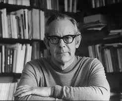

Rollo May

Rollo May
Rollo May, Amerikalı varoluşçu psikolog.
Varoluşçu felsefenin yanı sıra humanist psikolojinin de önemli isimlerinden biri olarak bilinir.
Türkçeye Kendini Arayan İnsan ve Yaratma Cesareti isimli kitapları çevrilmiştir. Rollo May, teolog Paul Tillich'in yakın arkadaşlarındandır.
Rollo May Eserleri
- Yaratma Cesareti
- Aşk Ve İrade
- Güç Ve Masumiyet
- Kafese Konan Adam
- Özgürlük ve Kader